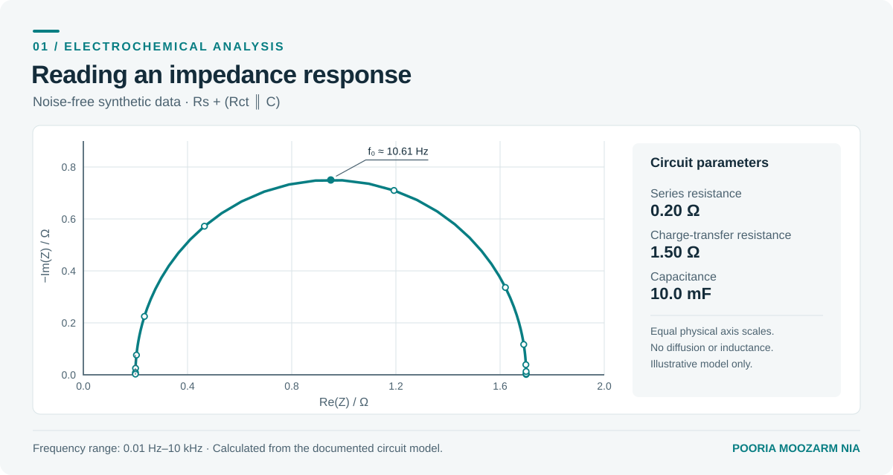
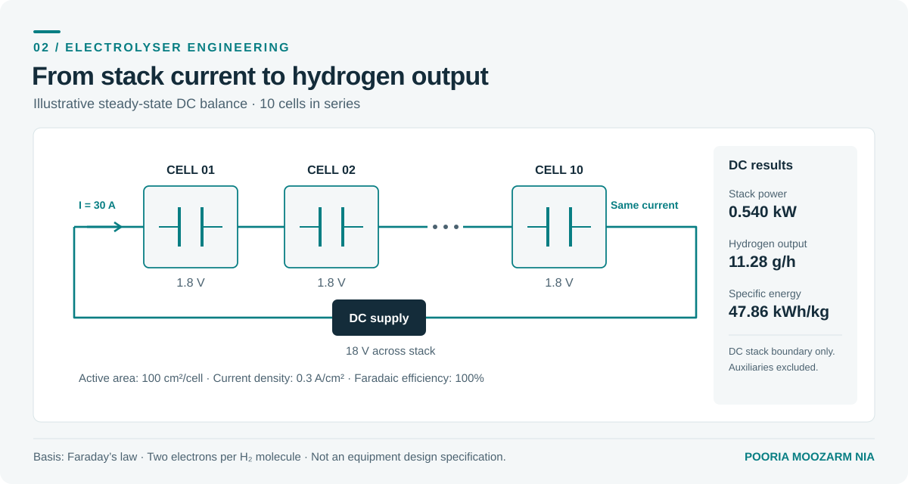
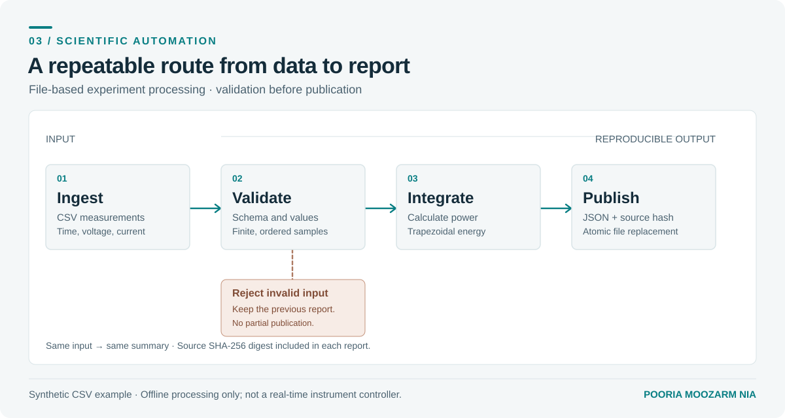
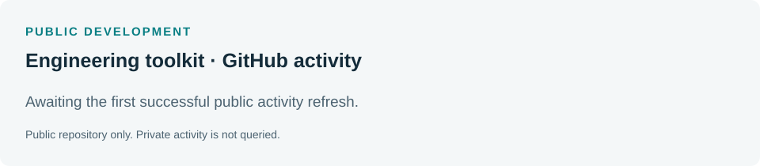

SCIENTIFIC COMPUTING
Electrochemical analysis
Fit a simple equivalent circuit and recover its parameters from a synthetic impedance spectrum.
View source and notesI'm an electrochemist and Principal Scientist. I develop electrochemical systems and write the software that makes them easier to test, monitor and improve.
I have a PhD in Analytical Chemistry and more than a decade of experience across academic and industrial R&D. Most of my work has been in electrochemical energy technologies, from electrode materials and diagnostics to experimental rigs, cell and stack development and industrial scale-up.
I write software in Python and MATLAB to solve the problems that sit around those systems: collecting data, running tests, analysing measurements and getting useful information to the people making engineering decisions.
Three small projects that illustrate the kind of work I enjoy. They use synthetic data and standard equations, so you can run them without laboratory equipment or proprietary software.

Fit a simple equivalent circuit and recover its parameters from a synthetic impedance spectrum.
View source and notes
Estimate stack power, hydrogen output and DC energy consumption from basic operating inputs.
View source and notes
Check a measurement file, integrate energy and generate a repeatable, traceable report.
View source and notesThe public Python toolkit brings the calculation modules together, with a command-line interface and a separate interactive browser demonstration.
Open the workbench · Install the Python package · Read development notes
Change the operating inputs to see how the electrical load and hydrogen output vary. The defaults are illustrative, not equipment specifications.
Assumptions: steady state, identical series cells, DC only; excludes auxiliaries, AC losses, heat transfer, crossover and pressure effects. Not for equipment control or safety decisions.
A public-only snapshot of releases, issues and pull requests for this repository.

Scientific software, experimental automation and engineering platforms. I like connecting instruments, data and analysis in a way that makes the underlying process easier to run rather than harder to understand.
Away from work, I spend a fair amount of time with a camera, mostly photographing architecture, light and perspective.